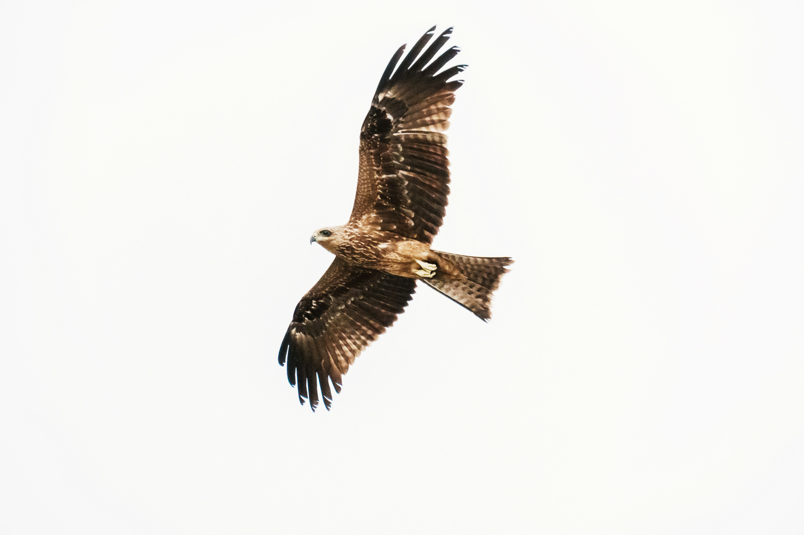

The Black Kite is a widespread bird of prey and one of the most familiar raptors around towns and cities in South Asia. Despite its common name, its plumage is generally dark brown rather than truly black, with a somewhat paler head and body. Its long wings and forked tail allow it to soar effortlessly on rising air currents. Black Kites are opportunistic feeders and consume carrion, insects, small animals, fish, and discarded food, allowing them to thrive in a wide variety of habitats. Compared with the similar Brahminy Kite, it is distinguished by the combination of features described above. Its preference for cities, farmland, wetlands, grasslands, open woodland, and rubbish sites also helps separate it from species that use different habitats. Its characteristic behaviour, including often soars for long periods and searches for food while flying; highly adaptable around human settlements, provides another useful field clue. Taken together, these differences make it easier to distinguish from similar species when the bird is seen clearly.